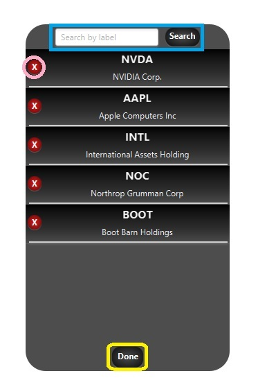

Main
Main window: You can see your tracked stocks and their live statistics. The blue square shows the stocks live statistics. The pink square shows its name and ticker and the yellow circle navigates to the edit window.

Edit
Edit window: This is the window you can edit which stocks you want to follow. The blue circle show your the search bar, the pink circle is the button to remove the stock from your list and the yellow square is to save the changes and go back to the main window. When you search for a stock, it's box will show a green button with "+" in it instead of the red "X" button.
